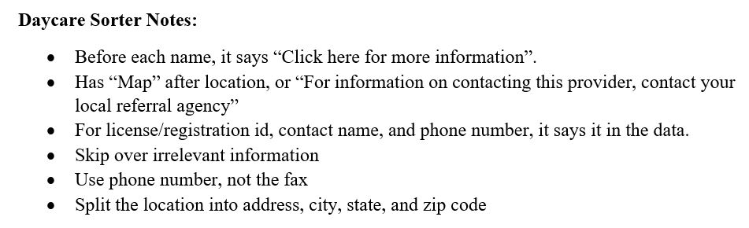

Completion Date: August 15, 2018
Program Functionality
This program parses through a set of data about daycares from ocfs.ny.gov. It converts the file, line by line, and takes the necessary information and adds it to another file. Each daycare will be represented by a line in the output file.
Planning
Before I started to program, I analyzed the data, and ways to get the information I needed. One such example being that before the name of each daycare, there would be a string that said, "Click here for more information". Here are some notes I took while studying the data:
Creating
The first step was to grab the info from the data file, and put it into something python can read, like a list. Each line that was pulled from the data file was an element in the new list. Now that I had the data, I could convert the methods from ideas to code. This was an easy task, just checking each line in a certain order. Beginner coders with the knowledge of how to use if, elif, and else statements in python could do this part. The rest of the project is just adding the data to the csv, comma separated values, file. From there, you can import the csv file onto a Google Sheets file or a Microsoft Excel file.
What I Learned
There were many things I learned while doing this projects. One, and the most important, thing that I learned was how to parse data. Another big thing that I learned was how to use command line arguments. I also learned how to read from a data file, as well as write to a comma separated values file.